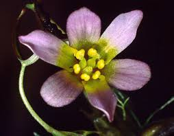

Cabombaceae
Water Shield Family / Fanwort Family
Cabombaceae is a small family of perennial aquatic herbs comprising two genera, Brasenia (Water Shield) and Cabomba (Fanworts), and about 6-8 species. They are found in still or slow-moving freshwaters worldwide. The family is characterized by rhizomatous growth, floating peltate leaves and/or finely dissected submerged leaves, often mucilaginous stems, solitary flowers with free tepals, and a distinctive superior ovary composed of separate carpels. Cabombaceae represents an ancient lineage, belonging to the basal angiosperm order Nymphaeales.
Overview
The Cabombaceae family consists of fully aquatic, rhizomatous perennial herbs adapted to life in freshwater ponds, lakes, and slow streams. It includes only two genera: Brasenia (Water Shield), which is monotypic (B. schreberi) and recognizable by its floating, peltate leaves coated underneath with thick mucilage, and Cabomba (Fanworts), known for its finely dissected, fan-like submerged leaves (often used in aquariums) and sometimes small, floating peltate leaves.
Cabombaceae has a wide distribution across tropical and temperate zones globally. While Brasenia is considered native across much of its range, some Cabomba species (C. caroliniana) have become invasive weeds outside their native Americas due to the aquarium trade.
This family holds significant evolutionary importance as it belongs to the order Nymphaeales. This order, along with Amborellales and Austrobaileyales, represents one of the earliest diverging lineages of all flowering plants (angiosperms), branching off before the major split leading to monocots and eudicots. Studying Cabombaceae thus provides valuable insights into the characteristics and evolution of the first flowering plants.
Quick Facts
- Scientific Name: Cabombaceae
- Common Name: Water Shield Family, Fanwort Family
- Number of Genera: 2 (Brasenia, Cabomba)
- Number of Species: Approximately 6-8
- Distribution: Widespread in tropical and temperate freshwaters; some Cabomba species invasive.
- Evolutionary Group: Angiosperms -> Nymphaeales (Basal Angiosperm lineage)
- Habit: Rhizomatous aquatic herbs.
Key Characteristics
Growth Form and Habit
Perennial aquatic herbs anchored by rhizomes in the substrate. Stems are slender and submerged. Submerged parts, especially in Brasenia (stems, petioles, leaf undersides), are often covered in a thick, distinctive gelatinous mucilage.
Leaves
Leaf morphology differs between genera:
- Cabomba: Usually dimorphic. Submerged leaves are opposite or whorled and finely dissected into numerous linear or dichotomously branched segments, appearing fan-like. Small, alternate, peltate (shield-shaped, petiole attached centrally) floating leaves may also be produced.
- Brasenia: Monomorphic. Only produces alternate, long-petioled, peltate floating leaves with oval/elliptical blades and entire margins.
Stipules are absent.
Flowers
Flowers are solitary, arising from leaf axils on long pedicels that typically bring them to or above the water surface. They are bisexual, radially symmetrical (actinomorphic), and relatively small to medium-sized.
- Perianth: Consists of (4-)6(-12) free (separate) tepals that are petal-like, usually arranged in two whorls of 3. Tepals are typically white, yellow, pinkish, or purplish/dull red (Brasenia). Not clearly differentiated into sepals and petals, although the outer whorl may be slightly thicker or greener.
- Stamens: Variable number: 3-6 in Cabomba or 12-36 or more in Brasenia. Filaments are distinct and free. Anthers open via longitudinal slits.
- Ovary: Superior and distinctively apocarpous, composed of 2-18 separate carpels. Each carpel contains 1-3(-5) pendulous ovules and has a terminal stigma (sessile or on a very short style). Nectar may be secreted at the carpel bases (Brasenia).
Pollination occurs via wind (Brasenia) or insects (Cabomba).
Fruits and Seeds
The fruit is an aggregate consisting of the separate, indehiscent, leathery or somewhat follicle-like fruitlets (often termed achenes or utricles), each derived from a single carpel.
Each fruitlet contains 1-3 seeds. Seeds are small and possess an operculum (lid). They lack significant endosperm but have abundant perisperm (nutritive tissue derived from the nucellus).
Chemical Characteristics
The production of copious mucilage is characteristic, especially in Brasenia. Plants contain various phenolic compounds like tannins and flavonoids. They lack the ethereal oils found in some other basal angiosperm lineages.
Field Identification
Identifying Cabombaceae involves recognizing their aquatic habit, distinctive leaf types (peltate and/or dissected), often mucilaginous nature, and unique floral structure, particularly the separate carpels:
Primary Identification Features
- Habit: Aquatic herb rooted in substrate, with submerged stems.
- Leaves: Possessing either finely dissected submerged leaves (Cabomba) OR peltate floating leaves (Brasenia, sometimes Cabomba) OR both leaf types (Cabomba).
- Mucilage: Submerged parts often covered in gelatinous mucilage (especially prominent in Brasenia).
- Flowers: Solitary, axillary, floating or emergent, radially symmetric, with 6(+) separate petal-like tepals.
- Ovary: Superior, composed of multiple (2-18) separate carpels (apocarpous).
Secondary Identification Features
- Fruit: An aggregate of small, indehiscent achenes/utricles.
- Habitat: Still or slow-moving freshwater bodies (ponds, lakes, ditches, rivers).
- Stamens: Number varies (3-6 in Cabomba, 12+ in Brasenia).
Seasonal Identification Tips
- Growing Season: Most easily observed during warmer months when leaves and flowers are present at the water surface.
- Mucilage: The slimy coating on Brasenia is present on submerged parts throughout the growing season.
- Persistence: Plants overwinter via rhizomes buried in the substrate.
Common Confusion Points
- Nymphaeaceae (Water Lilies): Closely related, but typically have much larger flowers, fused carpels (syncarpous ovary, often inferior/half-inferior), and leaves that are usually heart-shaped with a basal sinus (notch), not peltate or finely dissected like Cabombaceae.
- Ceratophyllaceae (Hornworts): Have dissected submerged leaves, but lack roots entirely, and have tiny, apetalous, unisexual flowers. Belong to a different major lineage.
- Ranunculus subg. Batrachium (Water Crowfoots): Eudicots with dissected submerged leaves, but flowers have distinct sepals and petals (usually white/yellow), numerous stamens, and numerous separate carpels maturing into achenes; the overall flower structure differs.
- Myriophyllum (Water Milfoils - Haloragaceae): Have finely dissected submerged leaves (often whorled), but flowers are tiny, inconspicuous, often unisexual, borne in emergent spikes, and have inferior ovaries. Belong to Saxifragales.
The combination of aquatic habit, peltate floating leaves and/or dissected submerged leaves, often mucilaginous coating, flowers with free tepals, and separate superior carpels is characteristic of Cabombaceae.
Field Guide Quick Reference
Look For:
- Aquatic herb with rhizomes
- Leaves: Floating peltate OR submerged dissected (or both)
- Often mucilaginous (esp. Brasenia)
- Flowers solitary, floating/emergent
- Perianth of 6(+) free tepals
- Ovary superior, of 2-18 separate carpels
- Fruit: Aggregate of achenes/utricles
Key Variations (between genera):
- Brasenia: Only peltate leaves, slimy mucilage prominent, 12+ stamens.
- Cabomba: Usually dissected submerged leaves (± floating peltate), less mucilage, 3-6 stamens.
- Flower color (white/yellow/pink vs purplish/red)
Notable Examples
The family contains only two genera, both aquatic specialists.

Brasenia schreberi
Water Shield
The single species in its genus, with a wide but scattered global distribution. Recognizable by its alternate, oval, peltate floating leaves and the thick gelatinous mucilage coating its underwater stems and petioles. Flowers are small, dull reddish-purple, and wind-pollinated.

Cabomba caroliniana
Fanwort, Carolina Fanwort
Native to the Americas, but widely used in aquariums and now an invasive weed in many parts of the world. Characterized by its feathery, finely dissected submerged leaves (usually opposite or whorled) and often small, white or pinkish flowers that float on the surface. It can sometimes produce small floating peltate leaves as well.
Phylogeny and Classification
Cabombaceae is classified in the order Nymphaeales. This order represents one of the most ancient lineages of flowering plants (angiosperms), diverging very early in angiosperm evolution, before the separation of the major monocot and eudicot clades. It is considered a "basal angiosperm" group, along with Amborellales and Austrobaileyales.
Within Nymphaeales, Cabombaceae is the sister group to Nymphaeaceae (the Water Lily family). Together, these two families form a well-supported clade distinct from the third family sometimes placed in the order, Hydatellaceae (which was surprisingly moved here from Poales based on molecular data). The features of Cabombaceae, such as its apocarpous gynoecium (separate carpels), laminar placentation (in effect), presence of perisperm, and lack of ethereal oils, are considered ancestral traits within angiosperms, making the family crucial for understanding the morphology and evolution of the earliest flowering plants.
Position in Plant Phylogeny
- Kingdom: Plantae
- Clade: Angiosperms (Flowering plants)
- Order: Nymphaeales (Basal Angiosperm Lineage)
- Family: Cabombaceae
Note: Nymphaeales is not part of the Monocot or Eudicot clades, but represents an earlier branching lineage.
Evolutionary Significance
Cabombaceae holds exceptional evolutionary significance:
- Basal Angiosperm Lineage: As part of Nymphaeales, it provides critical insights into the morphology, anatomy, genetics, and ecology of the earliest flowering plants, helping to reconstruct the ancestor of all angiosperms.
- Ancestral Traits: Exhibits features considered ancestral ("primitive") among flowering plants, such as separate carpels (apocarpy), laminar placentation, and presence of perisperm.
- Evolution of Aquatic Habit: Represents an ancient lineage of aquatic angiosperms, offering clues about how flowering plants adapted to freshwater environments early in their history.
- Comparative Genomics: Genomes of Nymphaeales members are studied to understand the evolution of genes and genomes at the base of the angiosperm tree.